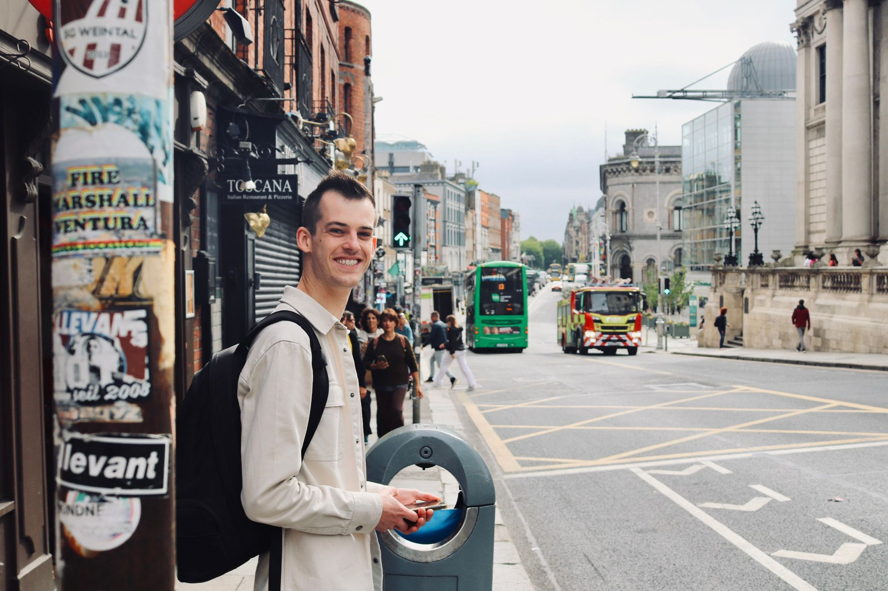

I'm Ward, a UX Designer from Noord-Brabant with a soft spot for complex problems and the people behind them. I studied Industrial Design at Eindhoven University of Technology, where I got hooked on the intersection of psychology, strategy, and technology. That's still what drives me today.
At Gynzy, I work on an educational platform used by thousands of teachers and students. My goal is simple: make their day a little better, every day. Sometimes that means facilitating a workshop, sometimes diving deep into research data, sometimes quickly prototyping a solution. I adapt to what the situation needs.
Outside of Gynzy, I've co-founded a sustainable wine company, published academic research in dementia care, and spent a research semester in Sydney. I'm endlessly curious, pretty direct, and always up for a good conversation.

I don't have a fixed playbook. Some problems need deep research before you touch a single pixel. Others need a quick prototype by tomorrow. I read the room, adapt my approach, and go where the impact is. The one constant: I always start by understanding people.
Numbers only tell part of the story. That's why I combine quantitative insights with qualitative research, like school visits, user interviews, and usability tests. The best design decisions happen when both sides of that story inform each other.
I care about more than individual screens. I think in systems, patterns, and principles that structurally raise the bar for the entire product. Whether it's evolving a design system or shaping a UX vision, I want to leave things better than I found them.
I use AI to amplify what my team can do. Ideas that would otherwise take weeks, I now prototype in days, and I build components and features in code myself. Combined with a strategic perspective, that creates leverage: I don't just design solutions, I ship them.